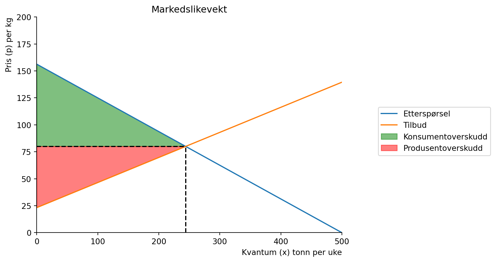
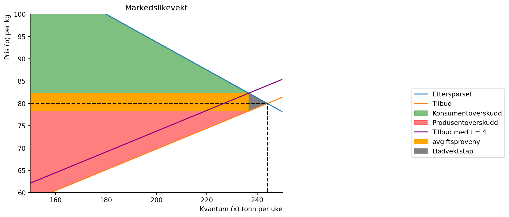

Code
# Importerer nødvendige biblioteker
import sympy as sp
import numpy as np
from matplotlib import pyplot as plt
# Definerer funksjonene invers
def demand(x):
return (500-x)/3.2
def supply(x,t):
return ((100+x)/4.3)+ tFor å gå tilbake til hovedsiden trykker du her.
Lever inn lenken til ditt repo på GitHub hvor løsningen ligger. Individuell innlevering.
Se Jupyter notatblokk “Forsmak mappe 1” for et forslag til fremgangsmåte her, og kap 9 i boka. Samt forelesning 08.02.
Vi ser på markedet for oppdrettslaks på s. 101-104 i boka, og som vi har analysert i forelesning 5.
Med en stykkavgift på \(t\) kr per enhet pålagt selgere kan vi skrive etterspørsel og tilbud i (1) og (2):
\[\begin{equation} x^{D}= 500 -3.2p\tag{1} \end{equation}\]
og tilbud:
\[\begin{equation} x^{S}= -100 + 4.3(p-t)\tag{2} \end{equation}\]
# Importerer nødvendige biblioteker
import sympy as sp
import numpy as np
from matplotlib import pyplot as plt
# Definerer funksjonene invers
def demand(x):
return (500-x)/3.2
def supply(x,t):
return ((100+x)/4.3)+ t# Lager likevektsbetingelsen
x,t=sp.symbols('x, t', real=True, positive=True)
equ=sp.Eq(demand(x),supply(x,0))
equ\(\displaystyle 156.25 - 0.3125 x = 0.232558139534884 x + 23.2558139534884\)
x_eq=sp.solve(equ,x)
x_eq=float(x_eq[0])
x_eq243.99999999999997p_eq =demand(x_eq)
p_eq80.0producer_surplus=sp.integrate(p_eq-supply(x,0),(x,0,x_eq))
producer_surplus\(\displaystyle 6922.79069767442\)
consumer_surplus=sp.integrate(demand(x)-p_eq,(x,0,x_eq))
consumer_surplus\(\displaystyle 9302.5\)
tax_revenue=sp.integrate(supply(x,t)-supply(x,0),(x,0,x_eq))
# Ikke sikker på hvorfor denne ble slik
tax_revenue\(\displaystyle 244.0 t\)
x_n=np.linspace(0.1,500,100)
q= np.linspace(0,x_eq,100)
#lager en akse
def create_ax():
fig, ax = plt.subplots()
ax.set_ylabel('Pris (p) per kg', loc='top')
ax.set_xlabel('Kvantum (x) tonn per uke', loc='right')
ax.set(xlim=(0,500))
ax.set(ylim=(0,200))
ax.spines['top'].set_color('none')
ax.spines['right'].set_color('none')
return fig, ax
fig, ax = create_ax()
# plotter likevekten for t=0
ax.plot (x_n, demand(x_n), label='Etterspørsel')
ax.plot (x_n, supply(x_n,0), label='Tilbud')
# make line for equilibrium
ax.vlines(x_eq, 0, p_eq, linestyles='dashed', color='black')
ax.hlines(p_eq, 0, x_eq, linestyles='dashed', color='black')
# tittel
ax.set_title('Markedslikevekt')
ax.fill_between(q,p_eq,demand(q), color = 'green',alpha = 0.5,label='Konsumentoverskudd')
ax.fill_between(q,supply(q, 0),p_eq, color = 'red',alpha = 0.5,label='Produsentoverskudd')
#vis navnene:
ax.legend(bbox_to_anchor=(1.5,0.6));
# likevekt for t=4
equ_t4 = sp.Eq(demand(x),supply(x, 4))
# løser likningen for x
x_eq_t4 = sp.solve(equ_t4,x)
# konverterer til float
x_eq_t4 = float(x_eq_t4[0])
# finner likevektsprisen
p_eq_t4=demand(x_eq_t4)
# finner dødvektstapet
q2 = np.linspace(0,x_eq_t4,100)
# finner avgiftsproveny
q3 = np.linspace(x_eq,x_eq_t4,100)
# definerer aksene litt nærmere likevekten
ax.set(xlim=(150,250))
ax.set(ylim=(60,100))
# plotter likevekten for t=4
ax.plot (x_n, supply(x_n,4), color="purple", label='Tilbud med t = 4')
# fyller inn avgiftsproveny
ax.fill_between(q2,p_eq_t4,p_eq_t4-4, color = 'orange',label='avgiftsproveny')
# fyller inn dødvektstap
ax.fill_between(q3,supply(q3, 0),demand(q3), color = 'grey',label='Dødvektstap')
# viser legende
ax.legend(bbox_to_anchor=(1.5,0.6));
fig
avgiftsproveny = sp.integrate(4, (x, 0, x_eq_t4))
avgiftsproveny\(\displaystyle 946.645333333333\)
from IPython.display import Markdown
#producer surplus without tax
prod_surplus_t0 = sp.integrate(p_eq-supply(x, 0),(x,0,x_eq))
#konsumer surplus without tax
cons_surplus_t0 =sp.integrate(demand(x)-p_eq,(x,0,x_eq))
#production surplus with t=4
prod_surplus_t4 = sp.integrate(p_eq_t4 - 4 - supply(x, 0), (x, 0, x_eq_t4))
#konsumer surplus with t=4
cons_surplus_t4 = sp.integrate(demand(x)-p_eq_t4, (x, 0, x_eq_t4))
#tax proveny with t=4
avgiftsproveny = sp.integrate(4, (x, 0, x_eq_t4))
#deadweight loss
dødvektstap = sp.integrate(demand(x) - supply(x, 0), (x, x_eq_t4, x_eq))
tbl=f"""
| | Før avgift |Etter avgift | Endring (etter avgift-før avgift)|
| :-------------------| :----------------------------------------|:-------------|:---------------|
| Konsumentpris: | ${p_eq }$ | ${round(p_eq_t4, 2)}$ | ${round(p_eq_t4 - p_eq, 2)}$ |
| Produsentpris: | ${p_eq }$ | ${round(p_eq_t4, 2)-4 }$ | ${round(p_eq_t4-4 - p_eq, 2)}$ |
| Kvantum: | ${round(x_eq, 2)}$ | ${round(x_eq_t4, 2)}$ | ${round(x_eq_t4 - x_eq, 2)}$ |
| Konsumentoverskudd: | ${round(cons_surplus_t0, 2)}$ |${round(cons_surplus_t4, 2)}$ | ${round(cons_surplus_t4 - cons_surplus_t0, 2)}$ |
| Produsentoverskudd: | ${round(prod_surplus_t0, 2)}$ | ${round(prod_surplus_t4, 2)}$ | ${round(prod_surplus_t4 - prod_surplus_t0, 2)}$ |
| KO + PO: | ${round(prod_surplus_t0 + cons_surplus_t0, 2)}$ | ${round(prod_surplus_t4 + cons_surplus_t4, 2)}$| ${round((round(prod_surplus_t4 + cons_surplus_t4, 2)) - (round(prod_surplus_t0 + cons_surplus_t0, 2)), 2)}$ |
| Skatteproveny :| ${0}$ |${round(avgiftsproveny, 2)}$ | ${round(avgiftsproveny, 2) - 0}$ |
| Dødvektstap: |${0}$ | ${round(dødvektstap, 2)}$ | ${round(dødvektstap, 2) - 0}$ |
"""
display(Markdown(tbl))| Før avgift | Etter avgift | Endring (etter avgift-før avgift) | |
|---|---|---|---|
| Konsumentpris: | \(80.0\) | \(82.29\) | \(2.29\) |
| Produsentpris: | \(80.0\) | \(78.29\) | \(-1.71\) |
| Kvantum: | \(244.0\) | \(236.66\) | \(-7.34\) |
| Konsumentoverskudd: | \(9302.50\) | \(8751.34\) | \(-551.16\) |
| Produsentoverskudd: | \(6922.79\) | \(6512.63\) | \(-410.16\) |
| KO + PO: | \(16225.29\) | \(15263.97\) | \(-961.32\) |
| Skatteproveny : | \(0\) | \(946.65\) | \(946.65\) |
| Dødvektstap: | \(0\) | \(14.68\) | \(14.68\) |